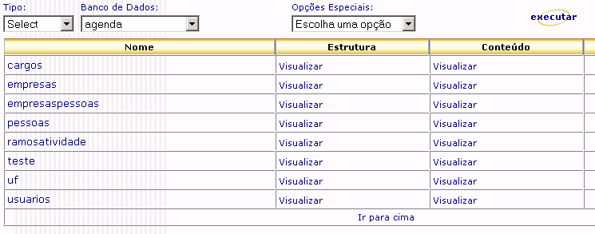

Para começarmos o desenvolvimento do projeto proposto primeiramente vamos fazer as definições gerais do nosso projeto informando que tipo de conexão com banco de dados vamos usar, qual banco de dados vai ser acessado entre outras coisas.
Perceba que nesta mesma tela, no canto esquerdo, aparecem as opções Banco de dados e Servidores. A opção Banco de dados leva à página de configuração de conexões com bancos de dados e a opção Servidores leva à página de configuração de servidores de FTP, POP3, SMTP ou web services que por ventura venham a ser utilizados pelo projeto.
Para o projeto que estamos desenvolvendo iremos precisar configurar uma conexão com um banco de dados. Para isso clique no link Banco de dados, preencha o campo Identificador com o valor agenda e no campo Conexão escolha o tipo de conexão que deverá ser estabelecido de acordo com o SGBD escolhido. Como explicado no início do tutorial sugerimos que sempre seja dada extrema preferência a conexões via JDBC, assim se você estiver utilizando o SGBD MySQL escolha alguma das opções JDBC relativas ao MySQL, se estiver utilizando o SGBD PostgreSQL escolha a opção relativa a ele. As opções do campo Conexão que estiverem delimitadas pelo sinal de asterisco indicam que o respectivo driver JDBC não se encontra instalado no ambiente.
Baseando-se que o SGBD escolhido para uso com o projeto tenha sido o MySQL selecione no campo Conexão a opção JDBC relativa ao MySQL (se você escolheu algum outro SGBD assegure-se de ter escolhido a opção correspondente a ele). O campo Alias deve ser preenchido com uma string de conexão correspondente com o tipo de conexão escolhido, para auxiliar o preenchimento desse campo com a string correta clique no ícone  que aparece no lado direito do rótulo.
que aparece no lado direito do rótulo.
Na janela a seguir preencha o campo Servidor com o nome ou IP da máquina onde está instalado o SGBD, e no campo Base de dados com banco de dados a ser acessado, e em seguida clique no botão "gravar".
Para finalizar a configuração de conexão do banco de dados preencha os campos Usuário e Senha com um usuário e senha que tenha permissão de acesso ao banco de dados. Os restantes dos campos não precisam ser configurados, clique no botão "gravar" para que a definição desse conexão de banco de dados seja salva. Caso haja algum erro de configuração aparecerá uma janela avisando que não foi possível estabelecer uma conexão com o banco de dados seguindo as definições informadas, se isto ocorrer reveja as definições feitas.
Para testar a conexão ou a execução de instruções de comando com um dos banco de dados do projeto basta executar o utilitário Explorar BD identificado pelo ícone  . Por exemplo, para saber quais são as tabelas que compõem o banco de dados do projeto escolha a opção TABLE do campo Opções Especiais.
. Por exemplo, para saber quais são as tabelas que compõem o banco de dados do projeto escolha a opção TABLE do campo Opções Especiais.
A figura abaixo ilustra a tela de consulta às tabelas do banco de dados Agenda:
